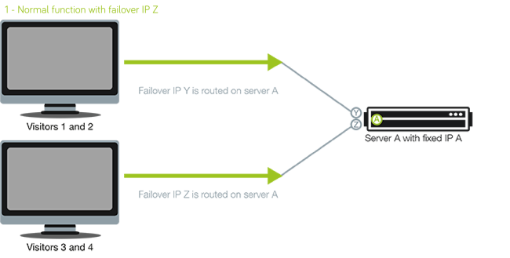

My CIT 496 class was assigned a server to set up for failover. We were able to set up the failover and configured it to switch the shared IP between the two servers. The only way we were able to test this was to force the 'primary' server to go into standby so the 'secondary' server could take over.
What we needed to set up is called STONITH or "Shoot the Other Node in the Head." This means that the 'secondary' node will shoot the 'primary' node to ensure that it is no longer functioning and won't interfere with the 'secondary' node taking over.
We began by looking up some sort of configuration for Corosync called "Fencing and STONITH." We realized quickly that the config we found didn't work, so we kept searching for a different "updated" configuration.
What we discovered is that every server and system has a slightly different configuration. We looked for something similar to the system we were running and attempted to tweak it just a little bit to fit our server. This still didn't work, so after consulting our professor we are now looking to set up a BASH script that will run when the IP address switches.